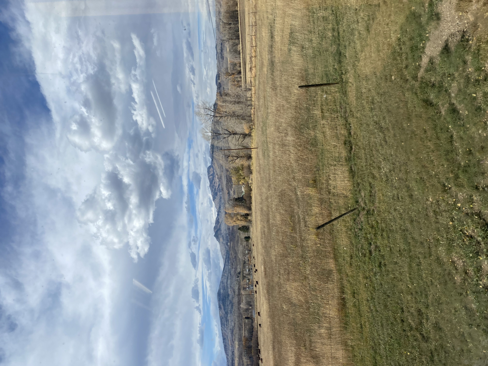
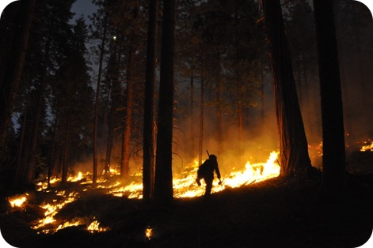
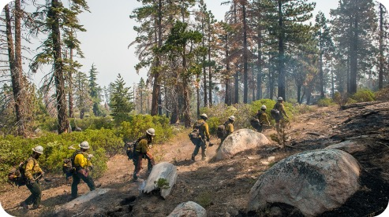
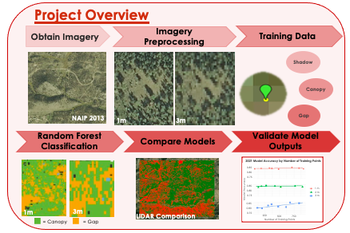

Applied Economist with a strong foundation in economic theory, statistical modeling, and data visualization to support strategic decision making. Strong capacity to communicate insights to an audience of different backgrounds and to collaborate across cross-functional teams. Proven experience in applying these skills to research and analysis in academic and government settings.
University of California Davis
2023–2024GPA: 3.5/4.0
Colorado State University, Fort Collins
2019–2023GPA: 3.9/4.0, Honors: Cum Laude
United States Bureau of Reclamation (USBR)
Dec 2024–February 2025University of California, Davis
September 2023–June 2024National Aeronautics and Space Administration (NASA)
January 2023–March 2023Colorado State University (CSU)
June 2022–December 2022United States Department of Agriculture (USDA)
May 2022–December 2022Journal of Rangeland Ecology and Management, 2023
This study examines cattle producers' perspectives on virtual fencing technology adoption, using Natural Language Processing to analyze interview data from 40+ ranchers across the western United States.
Our research examines technology diffusion for an emerging global positioning technology in the rural United States. Virtual Fence (VF) technology is a rapidly expanding means of maintaining boundaries for livestock without the need for physical fence. This is achieved using a tower that broadcasts a signal to collars, which give audible and electric cues that serve as an invisible boundary for livestock, namely cattle in the context of this study.
Stage One, Conducting the Interviews: In this stage, using a document with pre-specified interview questions, I conducted and recorded interviews with ranchers from Colorado, South Dakota, Montana, Washington, and Utah.
Stage Two, Analysis: The next step was to transcribe the recordings using Google Cloud Platform (GCP). Once transcribed, I conducted a two-stage coding process to parse out common themes, the pros and cons of the technology, and any concerns that ranchers raised. Going beyond what was described in the paper, I explored other natural language processing (NLP) methods in R and made word clouds for more meta-level analysis.
Stage Three, Writing: This analysis details the potential and anticipation for the emergence of VF technology as a new tool for rangeland management. Ranchers have cited its environmental, ecological, and cost-saving aspects as having immense potential to benefit their operations. Although it shows great promise, as with many emerging technologies, there still remain concerns. For example, there have been cases where collars have fallen off cattle or otherwise failed due to inclement weather or very rough topography. Another concern that has been raised is where VF will be feasible. Its implementation requires a large up-front capital cost, posing a challenge to credit-constrained or otherwise smaller operations.
If the PDF does not display correctly, click here to view it directly.
This project was done under the NASA DEVELOP program. Working in a team of four, we used aerial and satellite imagery to contribute to the literature and understanding of remote sensing as a tool for wildfire analysis in Colorado. This was done in the wake of the Cameron Peak Fire, one of the most devastating fires in Colorado to date. Increasing frequency and severity of wildfires in the state of Colorado has necessitated improved forest monitoring and management practices.
 
Objective: The overarching goal of this project was to provide a product for our partner agencies- the Colorado State Forest Service (CSFS), and the Colorado Forest Restoration Institute (CFRI) with a workflow they could use to identify wildfire-prone regions in Colorado.
Methods: In order to achieve this, we developed a thorough and nuanced procedure for canopy classification for forests in Colorado.
Important steps in this process included:
The full process is detailed as follows:
Conclusion: Our conclusion section evaluated the efficacy of various approaches that we employed to deliver the best product to our partner agencies.
Important conclusions that we reached include:
Key Takeaways: Overall, this project contributes to the body of literature on remote sensing applications in wildfire management and mitigation. We draw important conclusions within our study on which model variables best optimize the model accuracy drawn from the confusion matrix within the context of our study. Finally, we determined where future work could extend the work accomplished in this study. We recommend the exploration of object-based classification methods, in addition to shadow classification being done in the post-processing stage rather than pre-processing.
If the PDF does not display correctly, click here to view it directly.
NOTE: This work was done in collaboration with the following individuals:
Team: Nora Carmody, Lillian Gordon, Nathan Teich, Josh Virene
Science Advisors: Nick Young, Tony Vorster, Christopher Choi, Catherine Jarnevich
Fellow: Sarah Hettema
Python (pandas, geopandas, numpy, arcpy), R (tidyverse, dplyr), SQL, Stata, JavaScript
Time Series Forecasting, Data Visualization, Data Wrangling, Causal Inference
Natural Language Processing, Supervised and Unsupervised Classification, Random Forests, Regression, Google Cloud Platform
Probability, Constrained Optimization, Calculus
ESRI Suite, ArcGIS, ArcMap, Google Earth Engine, GDAL, ArcPy, geopandas
Microsoft PowerPoint, Microsoft Excel, Microsoft Word, Google Suite, Presentations, HTML, LaTeX